Biota & Tumbuhan
di Kawasan Mangrove
Ekosistem mangrove Serdang Bedagai adalah rumah bagi ratusan makhluk hidup yang saling bergantung dalam harmoni.
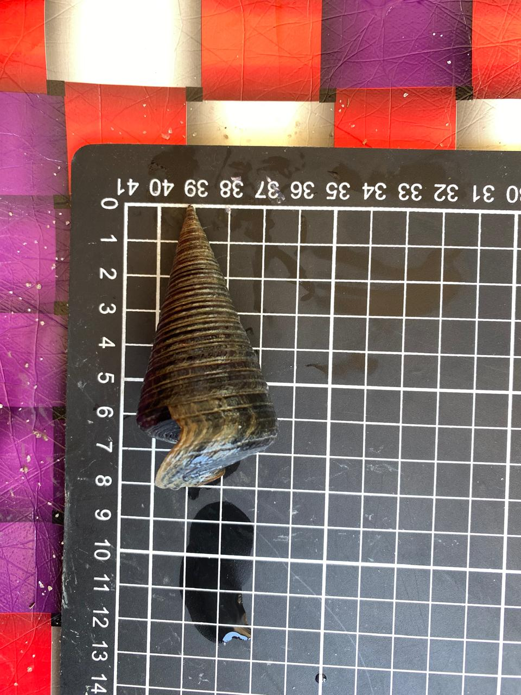
Siput Bakau (Telescopium telescopium)
Kingdom: Animalia
Phylum: Mollusca
Class: Gastropoda
Family: Potamididae
Genus: Telescopium
Species: Telescopium telescopium
MORFOMETRIK
panjang total: 8cm, lebar: 4,2 cm, berat total: 39,07 gr
Cangkang Telescopium telescopium berbentuk kerucut tinggi dan tebal menyerupai menara, dengan banyak uliran yang mengecil ke arah puncak. Warna cangkangnya cokelat tua hingga kehitaman dengan garis-garis spiral yang menonjol sehingga bertekstur kasar. Bagian dasarnya memiliki lingkaran badan terbesar, bukaan cangkang yang lebar, serta dilengkapi saluran sifon dan operkulum.
Biota laut
Udang Jerbung (Penaeus merguiensis)
Kerajaan: Animalia
Filum:Arthropoda
Kelas: Malacostraca
Ordo: Decapoda
Famili: Penaeidae
Genus: Penaeus
Spesies: Penaeus merguiensis
MORFOMETRIK
panjang total: 18cm, panjang badan: 6cm, panjang antenula: 3 cm, panjang antena: 12 cm, berat total: 9,95 gr, jumlah kaki renang: 4, jumlah kaki jalan: 4
Udang jerbung (Penaeus merguiensis)memiliki tubuh yang terbagi menjadi kepala-dada (cephalothorax) dan perut beruas (abdomen). Ciri khasnya yaitu cangkang tipis berwarna putih semi-transparan, rostrum bergerigi, antena sangat panjang, serta ujung kaki renang dan ekor yang berwarna kemerahan atau kekuningan saat masih segar.
Biota laut
Gurita Spongetip (Eledone palari)
Kerajaan: Animalia
Filum: Mollusca
Kelas: Cephalopoda
Ordo: Octopoda
Famili: Eledonidae
Genus : Eledone
Spesies: Eledone palari
MORFOMETRIK
panjang total: 20cm, berat total: 38.69gr, lengan: 8
Gurita Eledone palari memiliki mantel oval tanpa sirip, kulit lunak seperti gel, dan delapan lengan pendek dengan satu baris alat isap. Ciri khas jantan dewasa adalah ujung lengannya yang termodifikasi menyerupai spons (spongetip) untuk membantu reproduksi.
Biota laut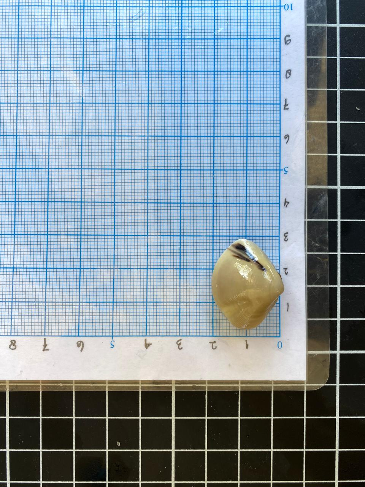
Kerang Kapah (Meretrix lyrata)
Kerajaan: Animalia
Filum: Mollusca
Kelas: Bivalvia
Ordo: Venerida
Famili: Veneridae
Genus: Meretrix
Spesies: Meretrix lyrata
MORFOMETRIK
panjang cangkang: 3cm, tinggi cangkang: 2cm, berat total: 4.25 gr
Kerang kapah (Meretrix lyrata) memiliki cangkang ganda berbentuk segitiga membulat dengan permukaan halus dan garis pertumbuhan yang jelas. Warnanya bervariasi dari putih kekuningan hingga abu-abu, dengan bagian dalam cangkang berwarna putih mengilap yang melindungi organ tubuh lunaknya.
Biota laut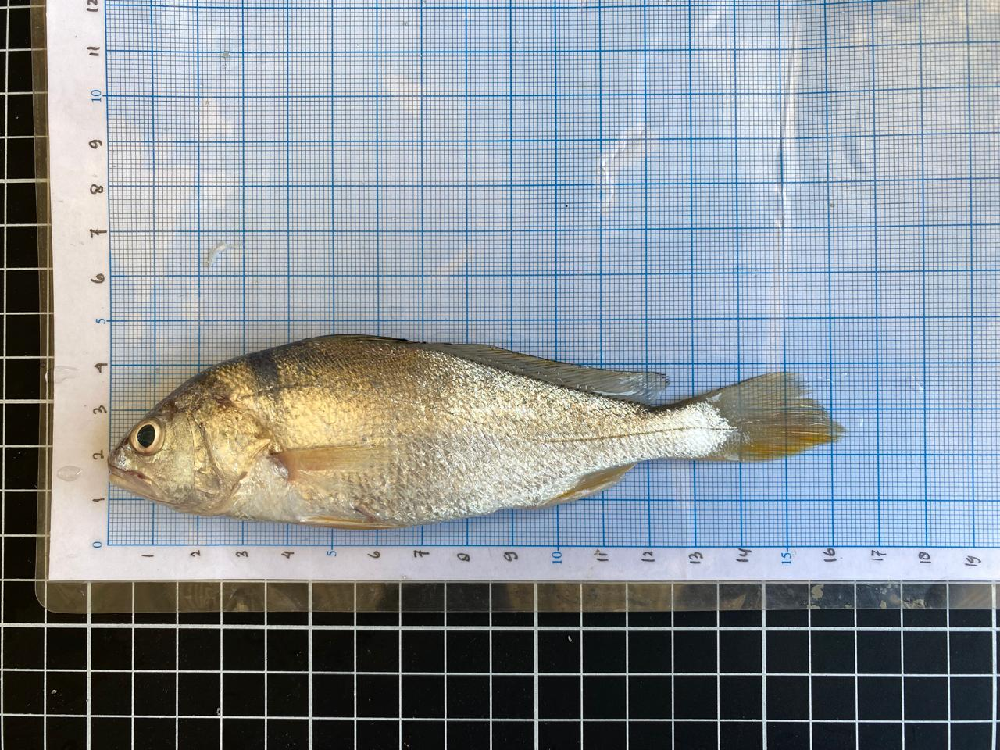
Ikan Gulama (Nibea albiflora))
Kerajaan: Animalia
Filum: Chordata
Kelas: Actinopterygii
Ordo: Perciformes
Famili: Sciaenidae
Genus: Nibea
Spesies: Nibea albiflora
MORFOMETRIK
panjang total: 15,5 cm, panjang standar: 13,5 cm, panjang kepala: 3,5 cm, tinggi badan: 4 cm
Ikan gulama (Nibea albiflora memiliki tubuh memanjang dan agak pipih berwarna keperakan dengan bagian bawah kekuningan. Ciri khasnya yaitu moncong tumpul, mulut sub-terminal, garis lateral yang jelas, sirip ekor berbentuk baji, serta sirip punggung yang terbagi menjadi bagian berduri dan bagian berjari-jari lunak.
Biota laut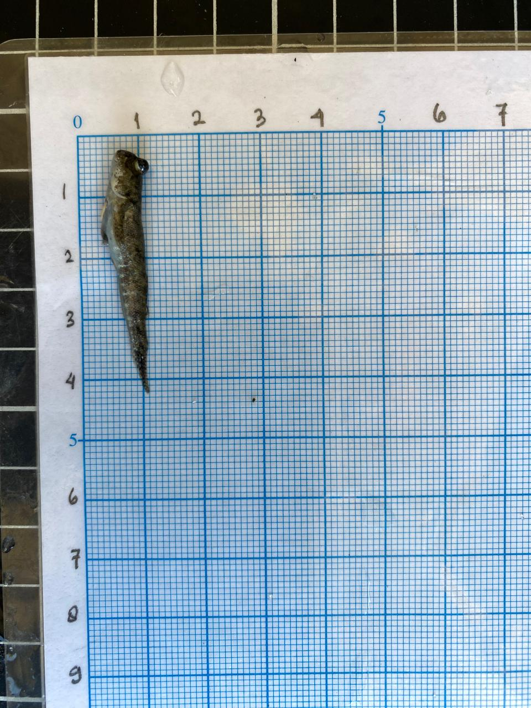
Ikan Gelodok (Periophthalmus argentilineatus)
Kingdom: Animalia
Phylum: Chordata
Class: Actinopterygii
Order: Gobiiformes
Family: Gobiidae
Genus: Periophthalmus
Species: Periophthalmus argentilineatus
MORFOMETRIK
panjang total: 4,2 cm, panjang standar: 3,4 cm, berat total: 0,40 gr
Ikan glodok (Periophthalmus argentilineatus) memiliki tubuh memanjang dengan bercak gelap sebagai kamuflase. Ciri khasnya adalah mata yang menonjol di atas kepala, moncong tumpul, serta sirip dada yang kuat dan berdaging sehingga dapat digunakan untuk merangkak di daratan berlumpur.
Biota laut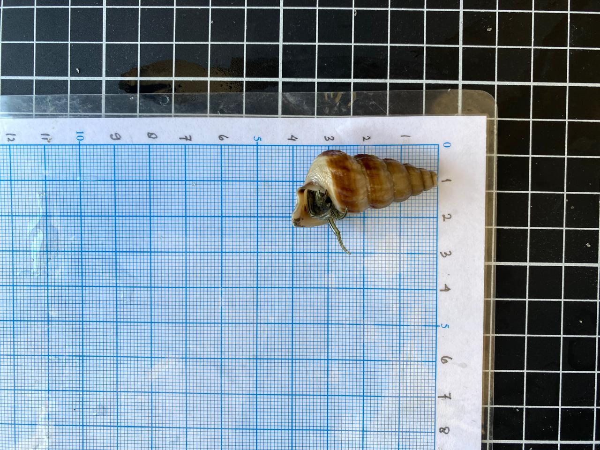
Susuh Kura (Sulcospira testudinaria)
Kingdom: Animalia
Phylum: Mollusca
Class: Gastropoda
Family: Pachychilidae
Genus: Sulcospira
Spesies: Sulcospira testudinaria
MORFOMETRIK
panjang total: 3,6 cm, lebar: 2 cm, berat total: 4,30 gr
Siput Sulcospira testudinaria memiliki cangkang kokoh berbentuk menara kerucut dengan sekitar 6 uliran. Cangkangnya berwarna cokelat kekuningan hingga cokelat tua, bertekstur halus, dan memiliki bukaan berbentuk oval yang membuka ke arah kanan.
Biota Laut
Siput Lumpur (Cerithidea alata)
Kingdom: Animalia
Phylum: Mollusca
Class: Gastropoda
Order: Cerithiimorpha
Family: Potamididae
Genus: Cerithide
Species: Cerithidea alata
MORFOMETRIK
panjang total: 7,2 cm, lebar: 1,7 cm, berat total: 8,14 gr
Siput bakau Cerithidea alata memiliki cangkang berbentuk menara memanjang dengan ujung runcing dan banyak uliran. Cangkangnya berwarna cokelat tua, bertekstur kasar, serta memiliki bibir luar yang menebal dan melebar seperti sayap sebagai perlindungan tubuhnya di habitat mangrove.
Biota Laut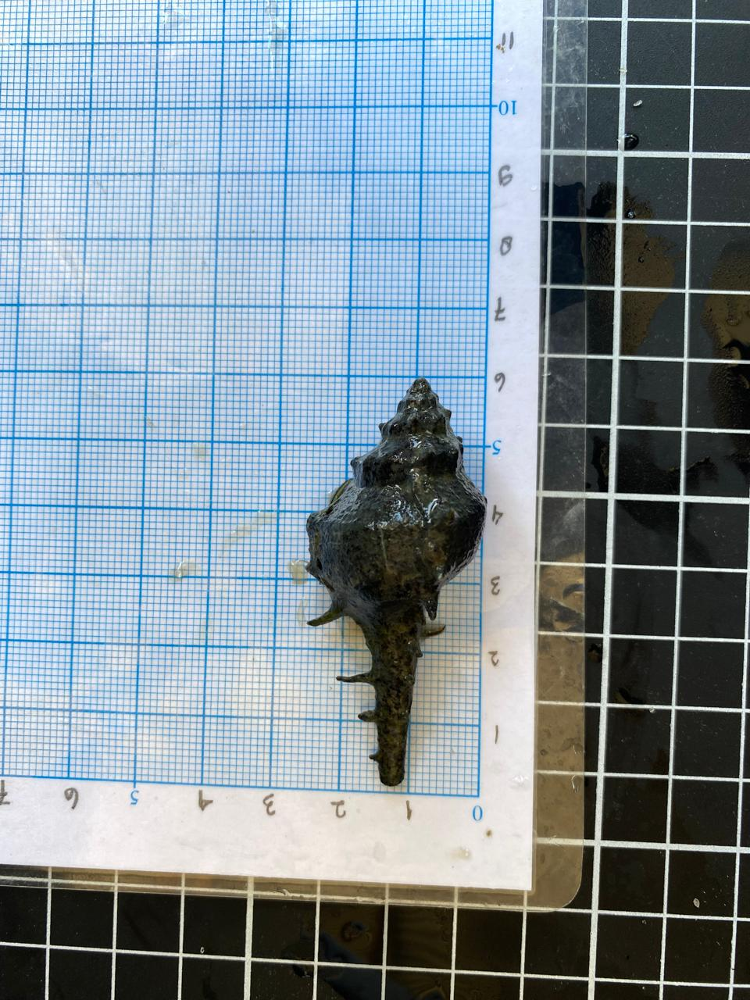
Siput Karang (Chicoreus asianus)
Kingdom: Animalia
Phylum: Mollusca
Class: Gastropoda
Order: Neogastropoda
Family: Muricidae
Genus: Chicoreus
Species: Chicoreus asianus
MORFOMETRIK
panjang total: 6,5cm, lebar: 3,1cm, berat total: 6,5 gr
Siput Chicoreus asianus memiliki cangkang kokoh berbentuk kumparan (fusiform) dengan permukaan kasar dan beberapa uliran yang membesar ke bawah. Ciri khasnya adalah adanya duri-duri pada bagian bahu cangkang serta saluran sifon panjang dan runcing di bagian bawah sebagai perlindungan dari predator.
Biota laut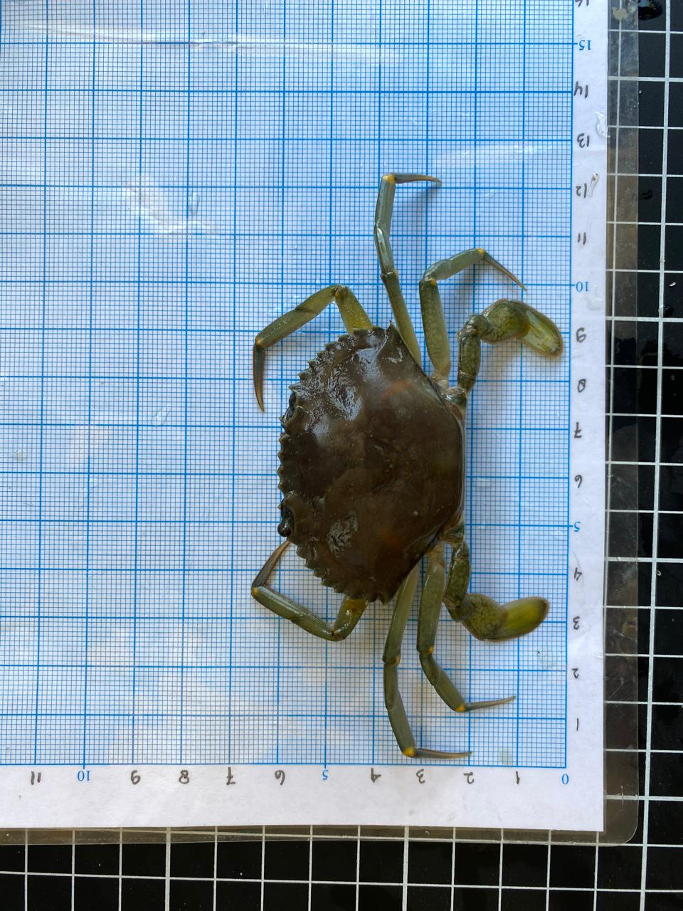
Kepiting Bakau Hijau (Scylla paramamosain)
Kingdom: Animalia
Phylum: Arthropoda
Subphylum: Crustacea
Class: Malacostraca
Order: Decapoda
Family: Portunidae
Genus: Scylla
Species: Scylla paramamosain
MORFOMETRIK
lebar karapas: 6,4 cm, panjang karapas: 5cm, panjang capit kanan: 3,5 cm, panjang capit kiri: 3,2 cm, panjang kaki perenang: 3 cm, berat total: 21,82 gr
Kepiting bakau hijau (Scylla paramamosain) memiliki karapas tebal berbentuk oval dengan sembilan duri tajam di bagian depan. Tubuhnya berwarna hijau hingga hijau kecokelatan, dilengkapi capit besar yang kuat serta kaki belakang berbentuk dayung yang membantu saat berenang.
Biota Laut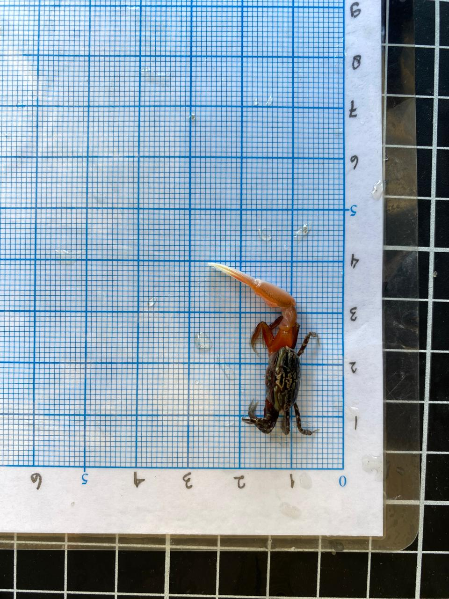
Kepiting Biola (Austruca annulipes)
Kerajaan: Animalia
Filum: Arthropoda
Kelas: Malacostraca
Ordo: Decapoda
Famili: Ocypodidae
Genus: Austruca
Spesies: Austruca annulipes
MORFOMETRIK
lebar karapas: 1,5 cm, panjang karapas: 1,1 cm, panjang capit besar: 2,5 cm, panjang kaki jalan: 1cm, berat total: 0,69 gr
Kepiting biola jantan (Austruca annulipes) memiliki satu capit besar berwarna jingga terang dengan ujung putih, sedangkan capit lainnya berukuran kecil untuk mencari makan. Karapasnya berbentuk trapesium dengan pola bercak putih keabu-abuan dan ditopang oleh empat pasang kaki ramping.
Biota Laut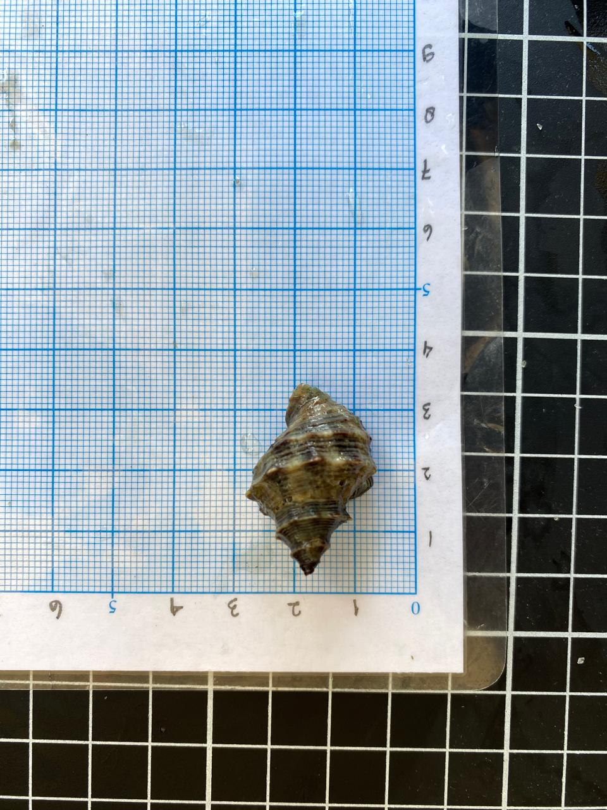
Siput Penggerek Tiram (Haustrum scobina)
Kerajaan: Animalia
Filum: Mollusca
Kelas: Gastropoda
Ordo: Neogastropoda
Famili: Muricidae
Genus: Haustrum
Spesies: Haustrum scobina
MORFOMETRIK
panjang total: 3,5cm, lebar: 2cm, berat total: 3,22gr
Siput Penggerek Tiram Haustrum scobina memiliki cangkang tebal dan kokoh berbentuk menyerupai gasing. Permukaannya kasar dengan tonjolan-tonjolan kecil berwarna cokelat tua kehitaman, serta memiliki saluran sifon pendek yang meruncing di bagian bawah.
Biota Laut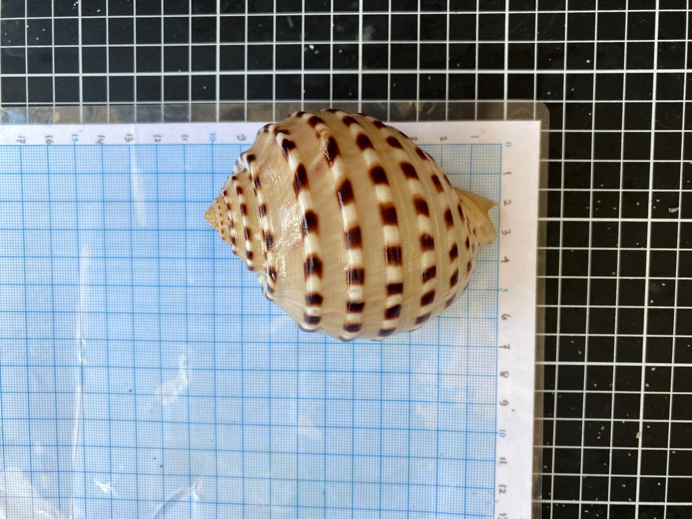
Siput Tun (Tonna dolium)
Kerajaan: Animalia
Fillum: Moluska
Kelas: Gastropoda Subkelas
Ordo: Littorinimorpha
Famili: Tonnidae
Genus: Tonna
Spesies: Tonna dolium
MORFOMETRIK
panjang cangkang: 14,5 cm, lebar cangkang: 7 cm
Siput laut Tonna dolium memiliki cangkang besar berbentuk bulat mengembung menyerupai tong dengan uliran rendah dan tubuh utama yang sangat dominan. Cangkangnya berwarna putih krem dengan pola bercak cokelat gelap yang tersusun di sepanjang rusuk spiral.
Biota laut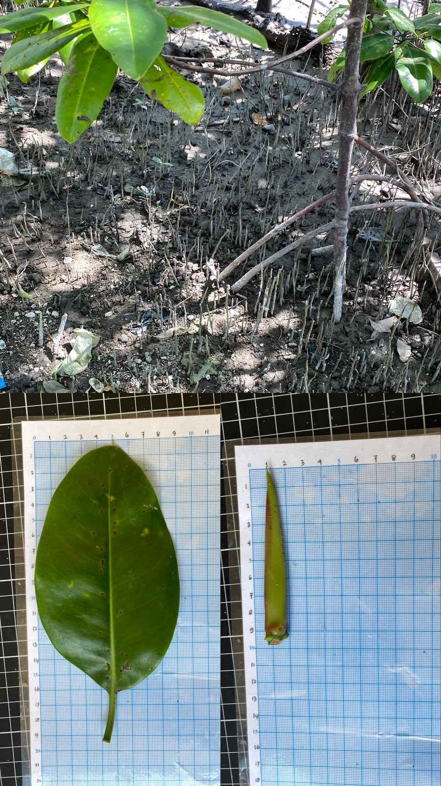
Rhizophora mucronata
Kingdom: Plantae
Subkingdom: Tracheobionta
Divisi: Magnoliophyta
Kelas: Magnoliopsida
Subkelas: Rosidae
Ordo: Malpighiales
Famili: Rhizophoraceae
Genus: Rhizophora
Spesies: Rhizophora mucronata
Habitat : Tumbuh di estuari, muara sungai, dan daerah pasang surut berlumpur dengan genangan tinggi.
Ciri Morfologi : Pohon hingga ±20 m, memiliki akar tunjang besar, daun elips mengkilap dengan ujung meruncing (mucronate), buah vivipar berbentuk propagul panjang.
Flora mangrove
Bruguiera cylindrica
Kingdom: Plantae
Subkingdom: Tracheobionta
Divisi: Magnoliophyta
Kelas: Magnoliopsida
Subkelas: Rosidae
Ordo: Malpighiales
Famili: Rhizophoraceae
Genus: Bruguiera
Spesies: Bruguiera cylindrica
Habitat : Umumnya tumbuh pada lumpur yang lebih stabil di bagian tengah-belakang hutan mangrove.
Ciri Morfologi : Pohon kecil–sedang, memiliki akar lutut (knee roots), daun elips mengkilap berukuran sedang, propagul silindris.
Flora mangrove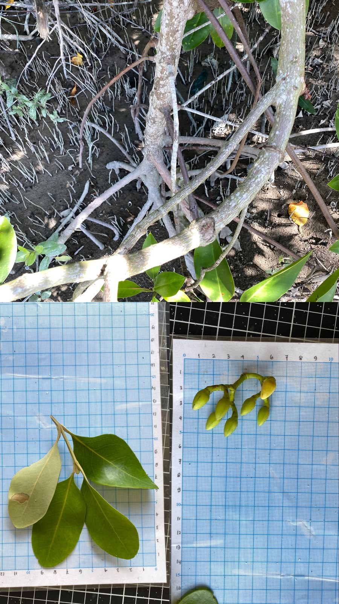
Rhizophora apiculata
Kingdom: Plantae
Subkingdom: Tracheobionta
Divisi: Magnoliophyta
Kelas: Magnoliopsida
Subkelas: Rosidae
Ordo: Malpighiales
Famili: Rhizophoraceae
Genus: Rhizophora
Spesies: Rhizophora apiculata
Habitat : Tumbuh pada daerah pasang surut berlumpur, terutama di tepi sungai, muara, dan bagian depan hingga tengah hutan mangrove dengan salinitas sedang hingga tinggi.
Ciri Morfologi : Pohon dapat mencapai tinggi 20–30 m, memiliki akar tunjang yang besar dan bercabang dan daun tunggal berbentuk elips hingga lonjong, tebal dan mengkilap.
Flora mangrove